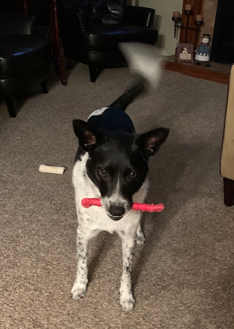
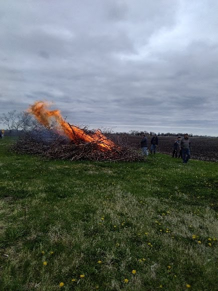
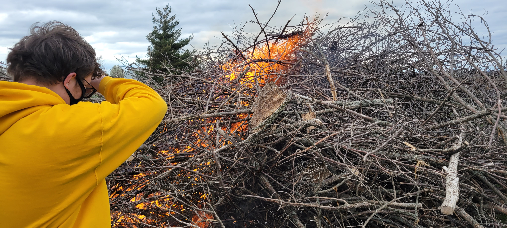
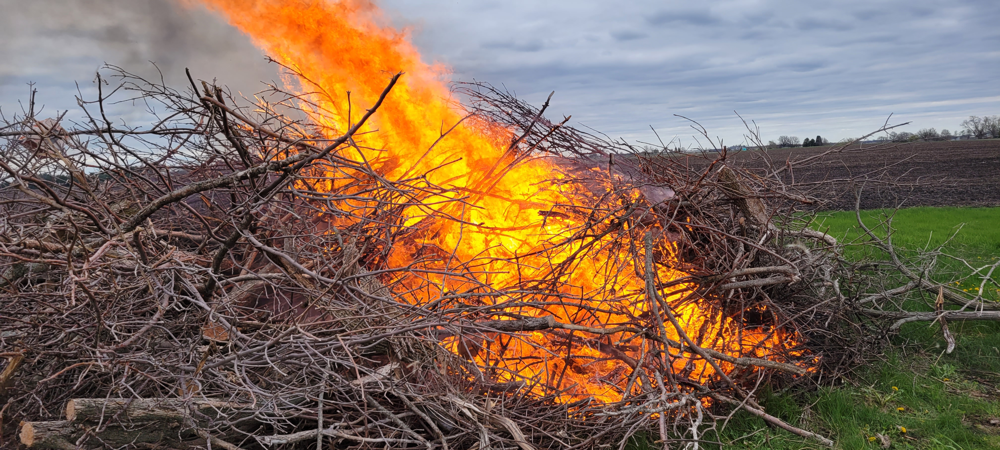

Nate Sturtz
Education
High School: Indianola High School
Current Grade: 12
Hobbies:
-
Software/Web Development
-
Working on my own projects, which include a search engine
-
Working on my eagle Scout
-
Being outdoors
-
Listening to music
-
Running Cross Country
Pets
I have one dog, his name is Toby
Interests
Some of my interests include:
-
Software/Web Development
I work on and manage a few websites. I do backend server work but I am excited to learn more about the frontend User Interface so I can improve my websites.
-
Scouts
Right now I am close to getting my eagle scout.
I joined cub scouts in 2015 and Briged over to Boy Scouts in 2017.
I was nominated to join the Order of the Arrow, Boy Scouts Honor Socitey, in the summer of 2021, and became a member fall of 2021. I then joined the brotherhood of the OA in the spring 2022.
I went to Camp Philmont in New Mexico in the Summer of 2021.
Eagle Scout Project
On May 4th, 2022, Star Wars Day, I executed my Eagle Scout Project
The project was cordnating, planning, and excuting a plan to burn of large, jeep sized piles of wood out at St. Thomas Church
   -
Music
I love Listening to music, I have a spotify playlist that has all of my faviorite music in it
My Spotify PlaylistSome of my faviorite artists are:
-
Skillet
-
NF
-
Jonathan Thulin
-
Natewantstobattle
-
All Good Things
-
DarthKilroy
My Music
Sometimes I will make my own music. I create short techo music. I go by the name DarthKilroy online
-